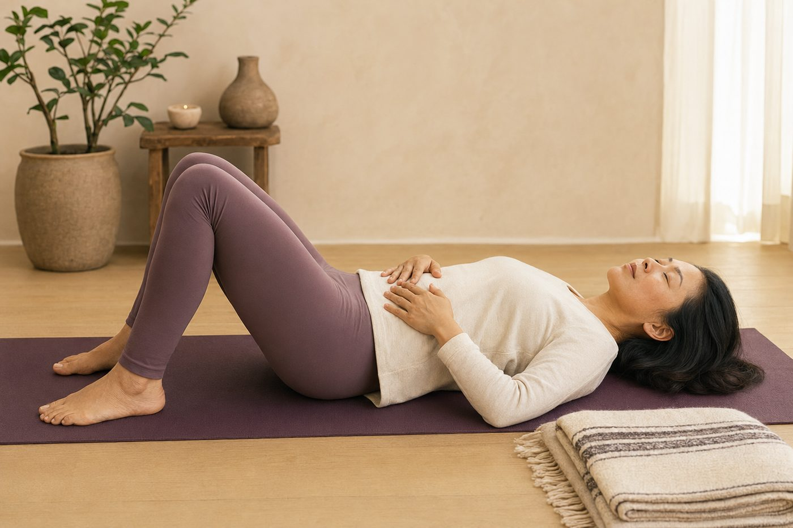

練習時總是憋氣？先學會腹式呼吸

你有沒有過這種經驗：一坐到電腦前、一開始認真回訊息，呼吸就默默不見了？等到肩膀痠到不行才驚覺，自己剛剛好像很久沒好好吐一口氣。其實不是你不會呼吸，而是你長期用了一種「很累的呼吸法」——而它，正悄悄把你的肩頸越鎖越緊。
一專心，呼吸就默默不見了
先說一個幾乎人人中招的小習慣：一坐到電腦前、一開始認真回訊息或滑手機，我們的呼吸常常會不知不覺變淺、變短，甚至整個屏住。國外把這現象叫做「螢幕呼吸中止」——你一專注，身體會下意識繃住、把氣憋著，等回過神來才發現胸口悶悶的、肩膀已經悄悄聳到耳朵旁邊。
就算沒有明顯憋氣，很多人長期也是用「胸式呼吸」在過日子：每一口氣都只有上胸口在起伏，又淺又快。淺，就得靠次數補；於是一整天下來，你等於用最耗力的方式呼吸了上萬次。而扛下這些額外工作的，正是你的脖子和肩膀。
你以為的「深呼吸」，可能正是肩頸緊的元凶
這裡有個很多人搞反的地方。一講到深呼吸，大家的反射動作通常是：用力大口吸氣、把胸口挺高、肩膀往上一提。感覺很認真，對吧？但這其實是最累、也最容易把肩頸鎖緊的一種呼吸。
真正該負責吸氣的主角，是橫膈膜——一片位在肺部下方、圓頂狀的肌肉，安靜的時候大約七、八成的吸氣都該由它包辦。當橫膈膜偷懶不出力，身體只好叫來一群「呼吸輔助肌」幫忙抬胸腔：
- 脖子的斜角肌、胸鎖乳突肌——本來只在你衝刺、大口喘氣時才該上場。
- 肩膀上的上斜方肌、提肩胛肌——它們一收縮，就是把肩胛往上提。
- 胸口深處的胸小肌——一緊，就把肩膀往前、往下拉，圓肩也跟著來。
這些肌肉本來是「救援投手」，只該在激烈運動時偶爾支援。但當你用胸式呼吸過一整天，它們等於被迫上場上萬次、幾乎沒有休息。肩頸會又緊又痠、甚至牽扯出頭痛，很多時候不全是姿勢的錯，而是你「呼吸的方式」一直在偷偷操它們。
你以為「用力挺胸、肩膀抬高」才叫深呼吸；其實那是最耗力的淺呼吸。真正的深呼吸，是肚子鼓起來、肩膀完全不動。
換成橫膈膜呼吸，肩膀為什麼會自己鬆
橫膈膜收縮時會往下沉，把肚子裡的內臟輕輕往下推，肚子因此鼓起，胸腔則產生負壓，空氣自然被吸進來——整個過程，肩膀一動也不用動。這就是「腹式呼吸」看起來是肚子在動、其實是橫膈膜在工作的原因。
它還有兩個容易被忽略的好處。第一，橫膈膜是你核心的「屋頂」：橫膈膜在上、腹橫肌像一圈牆、骨盆底肌在下，三者圍成一個罐子。好好用橫膈膜呼吸，等於順便輕輕喚醒了深層核心。第二，也是最關鍵的——慢而深、又把吐氣拉長的呼吸，會透過迷走神經打開副交感神經，也就是身體的「休息修復模式」。吐氣，就是神經系統的煞車。
當神經系統收到「現在很安全」的訊號，那些一直處在戒備、幫你抬胸的肩頸肌肉，才會終於收到「可以放手了」的許可。所以與其用力去「喬」肩膀，不如先把呼吸換對——這也就是為什麼呼吸練對了，肩膀自己會鬆。
躺著最好學：一步步把主導權交回橫膈膜
剛開始練，躺著最容易上手。因為地板幫你撐住了背和肩膀，你不用花力氣維持姿勢，注意力可以全部放在肚子的起伏上。
- 屈膝躺下、腳掌踩地，一隻手放胸口、一隻手放肚子。
- 用鼻子慢慢吸氣，想像空氣往肚子送，讓肚子的那隻手被推起來；胸口的手盡量不動，肩膀貼著地、不聳。
- 吐氣要比吸氣更長，可以像輕輕吹蠟燭那樣用嘴巴慢慢吐，感覺肚子緩緩下沉。
- 抓一個舒服的節奏，例如吸四秒、吐六秒，不勉強、順順的就好。
- 一次做五到十個呼吸，一天穿插幾回，會比一次做很久更有用。
如果一開始肚子不太聽話、或覺得「怎麼好像吸不飽」，別緊張，這很正常——那只是代表橫膈膜太久沒當家，需要一點時間把主導權接回來。千萬別用力猛吸、把胸口再挺起來，那又會退回老路。在鑫彥，我們也常讓你先在有支撐的姿勢裡練呼吸，例如靠著壁繩把身體穩穩托住；當你不必費力撐住自己，肩膀才有餘裕真正放下來。
想知道你的肩頸，是不是一直在幫你「呼吸」？
AI 體態檢測在教室現場做，用影像看出你圓肩、頭前傾、聳肩的程度，也讓老師知道你平常怎麼用力，陪你把呼吸的主導權慢慢交回橫膈膜。
預約首次 NT$199 AI 體態檢測今天可以先記住的一件事
下次一發現自己肩膀又聳起來、胸口悶悶的，先別急著按摩或甩一甩。把一隻手放到肚子上，吸氣讓手被推起來、吐氣拉得比吸氣長一點，做個三五次就好。你會發現肩膀常常在你「還沒動它」的時候，就自己降下來一點了。呼吸是可以重新練回來的習慣，只是橫膈膜要接回主導權需要時間，別急著一次到位——每天一點點，身體會慢慢記得這種比較省力的呼吸。
本頁為體態與姿勢的一般衛教與練習分享，非醫療診斷或治療。若有疼痛、舊傷或特殊病史，請先諮詢合格醫療專業人員。